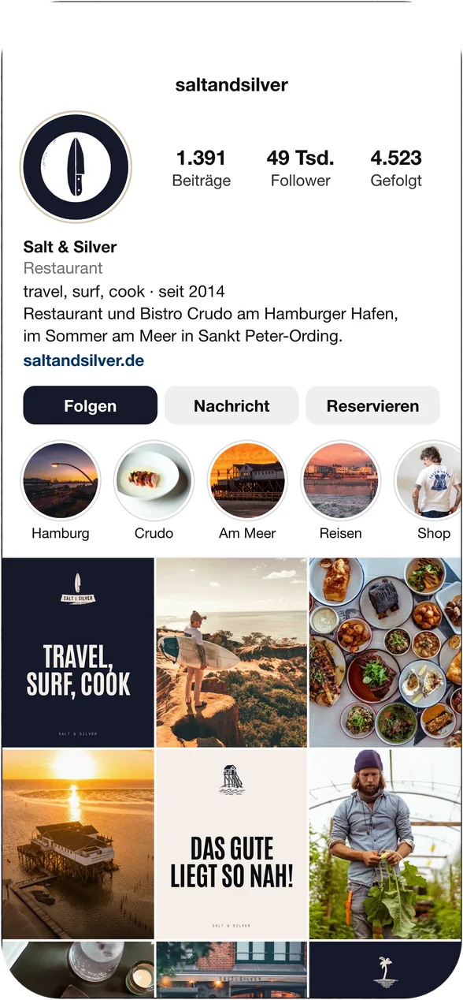

Ein Feed für Instagram.
Dreißig Beiträge aus euren eigenen Fotos. In jeder Reihe steht einer eurer Sätze zwischen zwei Fotos, und er wandert von Reihe zu Reihe eine Spalte weiter.
Scrollt im Handy durch das Profil und tippt einen Beitrag an.
Zahlen des Profils vom 13.10.2026



Der ganze Feed.
Alle dreißig Beiträge, so wie sie im Profil stehen. Ein Klick zeigt den Beitrag groß und mit seinem Text.
saltandsilver
1.391Beiträge49 Tsd.Follower4.523Gefolgt
Salt & SilverRestauranttravel, surf, cook · seit 2014Restaurant und Bistro Crudo am Hamburger Hafen,im Sommer am Meer in Sankt Peter-Ording.saltandsilver.de
FolgenNachrichtReservieren
 Hamburg
Hamburg Crudo
Crudo Am Meer
Am Meer Reisen
Reisen Shop
ShopDie Sätze auf den Tafeln stehen so auf saltandsilver.de. Die Texte zu den Beiträgen und die Biografie sind Vorschläge von mir.